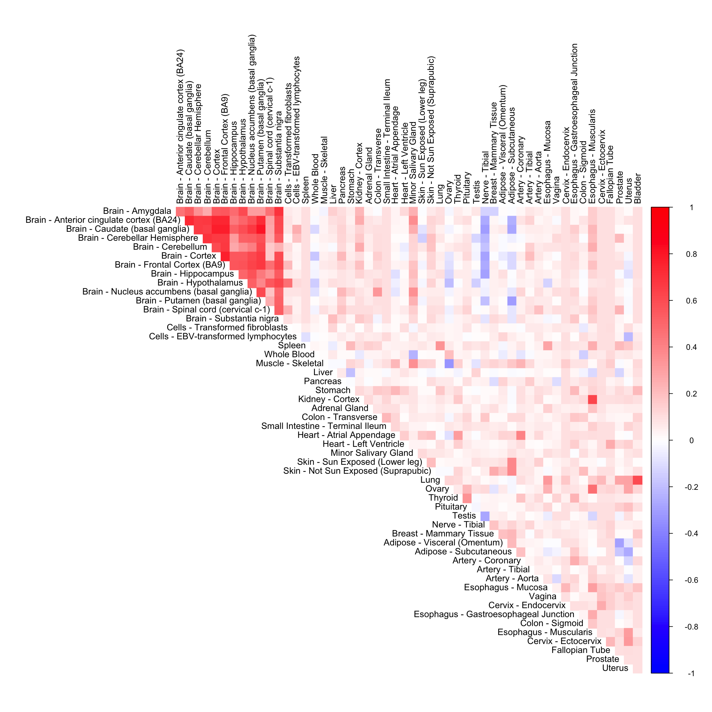
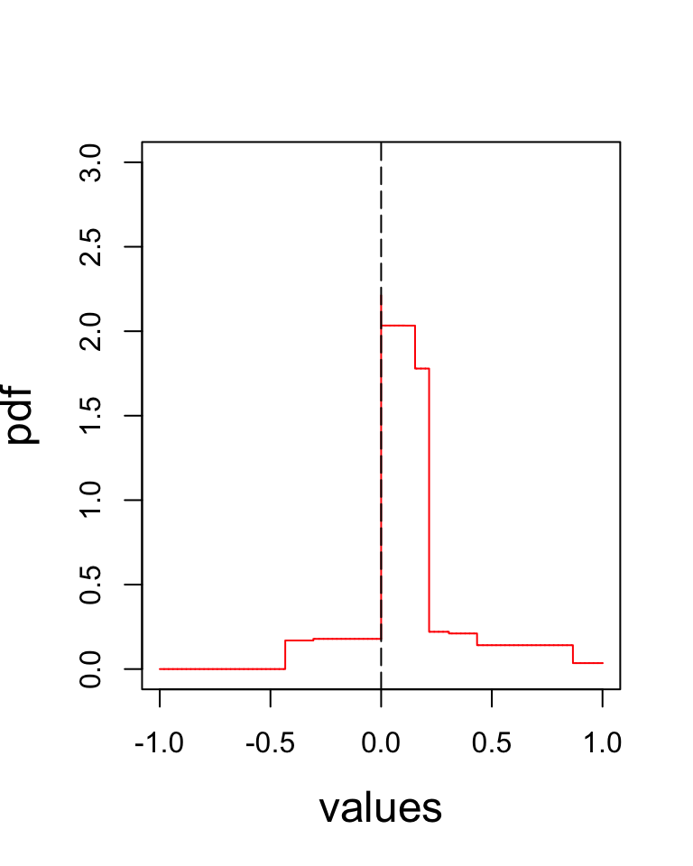

We perform adaptive correlation shrinkage analysis using the CorShrink R package on the subject by tissue expression data for the PLIN1 gene.
library(CorShrink)
library(corrplot)## corrplot 0.84 loadedlibrary(gridExtra)
library(ggplot2)
library(ashr)data("sample_by_feature_data")This data contains many NA values.We now run CorShrink on this data.
out <- CorShrinkData(sample_by_feature_data, sd_boot = FALSE, image = "null",
ash.control = list(mixcompdist = "halfuniform", control = list(maxiter = 1000)), report_model = TRUE)order_index <- get(load("../shared_output/order_index.rda"))
col2 <- c("blue", "white", "red")
corrplot(out$cor[order_index, order_index], diag = FALSE,
col = colorRampPalette(col2)(200),
tl.pos = "td", tl.cex = 0.9, tl.col = "black",
rect.col = "white",na.label.col = "white",
method = "color", type = "upper") 
The empirical correlation matrix
cor_mat <- cor(sample_by_feature_data, use = "pairwise.complete.obs")
corrplot(cor_mat[order_index, order_index], diag = FALSE,
col = colorRampPalette(col2)(200),
tl.pos = "td", tl.cex = 0.9, tl.col = "black",
rect.col = "white",na.label.col = "white",
method = "color", type = "upper") nsamp_mat <- get(load("../shared_output/common_samples.rda"))
df <- data.frame("original" = cor_mat[lower.tri(cor_mat)],
"corshrink" = out$cor[lower.tri(out$cor)],
"nsamp" = nsamp_mat[lower.tri(nsamp_mat)])
ggplot(df, aes(original, corshrink)) + geom_point(aes(colour = nsamp)) +
scale_colour_gradient(low = "lightcyan", high = "darkcyan") + coord_fixed(ratio=1) + xlim(-0.5, 1) + ylim(-0.5, 1)nsamp_mat <- get(load("../shared_output/common_samples.rda"))
df <- data.frame("original" = log((1+cor_mat[lower.tri(cor_mat)])/(1-cor_mat[lower.tri(cor_mat)])),
"corshrink" = log((1+out$cor[lower.tri(out$cor)])/(1-out$cor[lower.tri(out$cor)])),
"nsamp" = nsamp_mat[lower.tri(nsamp_mat)])
ggplot(df, aes(original, corshrink)) + geom_point(aes(colour = nsamp)) +
scale_colour_gradient(low = "lightcyan", high = "darkcyan") + coord_fixed(ratio=1) + xlim(-0.5, 1) + ylim(-0.5, 1)The density plot of the estimated \(g\) from te CorShrink model.
phalfuniform <- function(x){
df <- cbind(out$model$fitted_g$a, out$model$fitted_g$b)
z <- sum(out$model$fitted_g$pi[-1] * apply(df[-1,], 1, function(y) return (punif(x, y[1], y[2]))))
if(x >= 0){
z <- z + out$model$fitted_g$pi[1]
}
return(z)
}
dhalfuniform <- function(x){
df <- cbind(out$model$fitted_g$a, out$model$fitted_g$b)
z <- sum(out$model$fitted_g$pi[-1] * apply(df[-1,], 1, function(y) return (dunif(x, y[1], y[2]))))
return(z)
}xout <- sort(c(0, seq(-1,1, length.out = 10000)))pdf_vals_2 <- sapply(xout, function(x) return(dhalfuniform(x)))
plot(xout, pdf_vals_2, type = "l", col = "red", xlab = "values", ylab = "pdf", cex.axis = 1, cex.lab = 1.5, ylim = c(0, 3))
abline(v=0, col = "black", lty = 5)
cdf_vals_2 <- sapply(xout, function(x) return(phalfuniform(x)))
plot(xout, cdf_vals_2, type = "l", col = "red", xlab = "values", ylab = "cdf", cex.axis = 1,
cex.lab = 1.5)This R Markdown site was created with workflowr